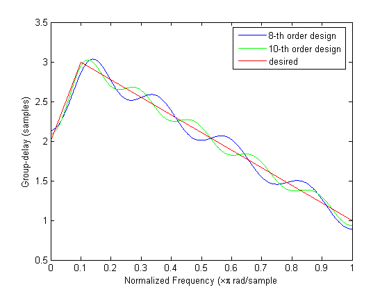
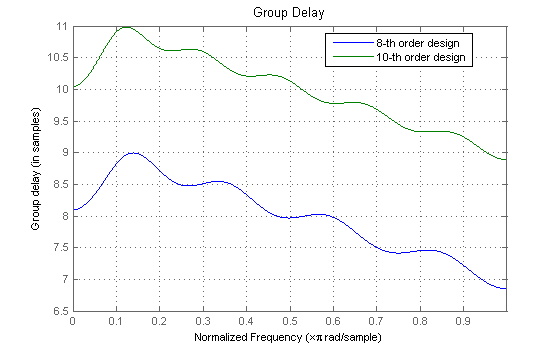
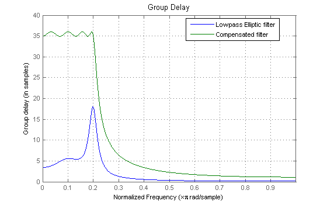
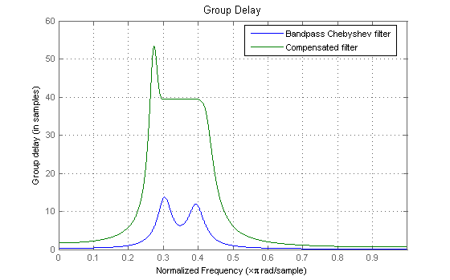
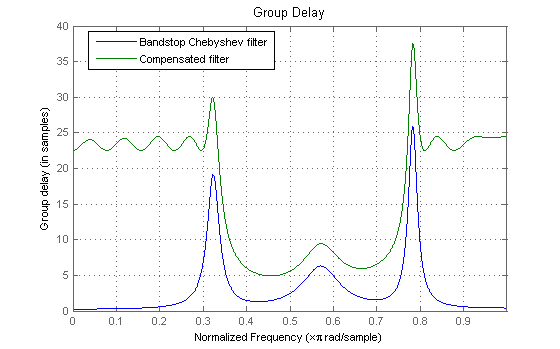

This demo shows some of the key features of the IIRGRPDELAY function. This function uses a least-Pth constrained optimization algorithm to design allpass IIR filters that meet a prescribed group-delay.
This function is intended to be used for group-delay equalization.
Author(s): D. Shpak and R. Losada
The syntax of the IIRGRPDELAY function is very similar to that of IIRLPNORM and IIRLPNORMC (see the Least Pth-norm optimal IIR Filter Design demo and Constrained Least Pth-norm IIR Filter Design demo for details).
The difference is that instead of specifying a desired magnitude response, you specify a desired group-delay response. The filter that is designed is an allpass filter (so its numerator is the reversed version of its denominator), therefore it is not possible to specify a different numerator and denominator order in this function.
The desired group-delay is specified in a relative sense. The actual group-delay depends on the filter order (the higher the order, the more the delay). But if you substract the offset in the group-delay due to the filter order, the group-delay of the designed filter tends to match the desired group-delay. Here's and example for two different filter orders
N = 8; % Filter order N2 = 10; % Alternate filter order F = [0 0.1 1]; % Frequency vector E = [0 1]; % Frequency edges Gd = [2 3 1]; % Desired group-delay W = [1 1 1]; % Weights R = 0.99; % Pole-radius constraint [b1,a1,tau1] = iirgrpdelay(N,F,E,Gd,W,R); [b2,a2,tau2] = iirgrpdelay(N2,F,E,Gd,W,R); [G1,F1] = grpdelay(b1,a1, 0:0.001:1, 2); [G2,F2] = grpdelay(b2,a2, 0:0.001:1, 2); plot(F1, G1-tau1, 'b',F2,G2-tau2,'g',... [0 0.1 1], [2 3 1], 'r'); xlabel('Normalized Frequency (\times\pi rad/sample'); ylabel('Group-delay (samples)'); legend('8-th order design','10-th order design','desired') set(gcf, 'Color', [1 1 1])
The actual group-delay of the two designs is different as can be seen in the following plot. The significance is that one must find a compromise between a better fit to the desired relative group-delay (less ripple) versus a larger overall delay in the filter.
hFVT = fvtool(b1,a1,b2,a2,'Analysis', 'grpdelay'); legend(hFVT, '8-th order design','10-th order design') set(hFVT, 'Color', [1 1 1])
The primary use of IIRGRPDELAY is to compensate for nonlinear-phase responses of IIR filters. Since the compensating filter is allpass, it can be cascaded with the filter you want to compensate without affecting its magnitude response. Since the cascade of the two filters is an IIR filter itself, it cannot have linear-phase (while being stable). However, it is possible to have approximately linear-phase response in the passband of the overall filter.
Here are a few examples of group-delay equalization:
Group-delay equalization of a lowpass elliptic filter.
[be,ae] = ellip(4,1,40,0.2); hellip = dfilt.df2(be,ae); f = 0:0.001:0.2; g = grpdelay(hellip,f,2); g1 = max(g)-g; [b,a,tau] = iirgrpdelay(8, f, [0 0.2], g1); hallpass = dfilt.df2(b,a); hoverall = cascade(hallpass,hellip); set(hFVT, 'Filter', [hellip, hoverall]); legend(hFVT,'Lowpass Elliptic filter','Compensated filter')
Passband group-delay equalization for a bandpass Chebyshev filter. Blue is before equalization and green is the delay-equalized cascade. The pole radius is constrained to not exceed 0.95. The resulting filter has one pair of constrained poles and the group delay variation in the passband is less than 0.2. The filter being equalized is:
[bc,ac] = cheby1(2,1,[0.3 0.4]); hcheby1 = dfilt.df2(bc,ac); f = 0.3:0.001:0.4; g = grpdelay(hcheby1,f,2); g1 = max(g)-g; wt = ones(1, length(f)); [b,a,tau] = iirgrpdelay(8, f, [0.3 0.4], g1, wt, 0.95); hallpass = dfilt.df2(b,a); hoverall = cascade(hallpass,hcheby1); set(hFVT, 'Filter', [hcheby1,hoverall]); legend(hFVT,'Bandpass Chebyshev filter','Compensated filter')
Passband group-delay equalization for a bandstop Chebyshev filter. Blue is before equalization and green is the delay-equalized passband. The pole radius is constrained to not exceed 0.95. The resulting filter has one pair of constrained poles. The filter being equalized is:
[bc,ac] = cheby2(3,1,[0.3 0.8], 'stop'); hcheby2 = dfilt.df2(bc,ac); f1 = 0.0:0.001:0.3; g1 = grpdelay(hcheby2,f1,2); f2 = 0.8:0.001:1; g2 = grpdelay(hcheby2,f2,2); f = [f1 f2]; g = [g1; g2]; gx = max(g)-g; wt = ones(1, length(f)); [b,a,tau] = iirgrpdelay(14, f, [0 0.3 0.8 1], gx, wt, 0.95); hallpass = dfilt.df2(b,a); hoverall = cascade(hallpass,hcheby2); set(hFVT, 'Filter', [hcheby2,hoverall]); legend(hFVT,'Bandstop Chebyshev filter','Compensated filter')